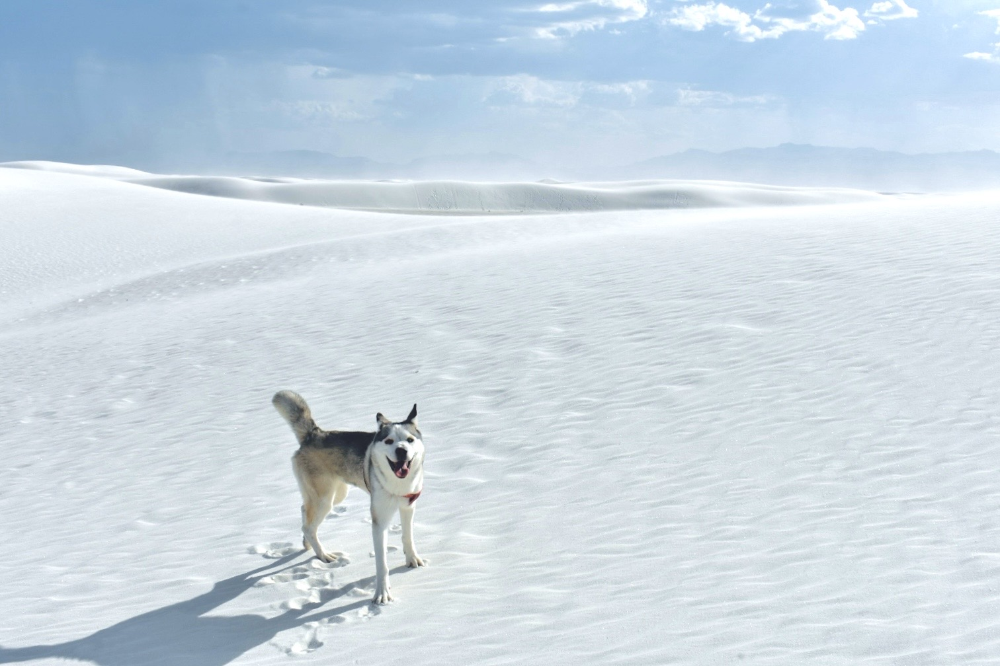

Born March 1, 2022. Best road trip co-pilot. Husky with opinions.

13 days | 3,930 miles | 8 states | 5 national parks | with Nemo
● Start/End ● National Park ● Stop
13 Days
3,930 Miles
8 States
5 National Parks
Aug 30 – Sep 4, 2022 | Davis to Los Angeles via Route 1 with Nemo
● Start/End ● Highlight ● Landmark
10 days | 3,339 miles | 6 states | Round trip across the plains & Rockies | with Nemo
● Start/End ● Museum ● Stop
10 Days
3,339 Miles
6 States
1 Museum
~250 visits across 7 years in the US (2019–2026). Estimates based on deeply personal experience.
The deliciousness of McDonald’s fries follows an exponential decay model. Peak flavor at t=0, critically degraded by t=5 min.